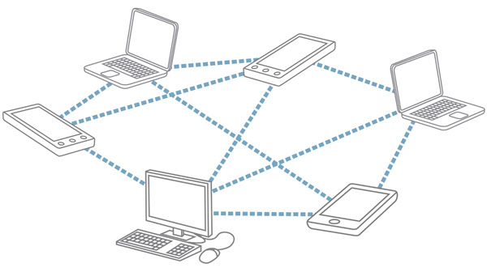

About GeoRadio
About GeoRadio
When the critical infrastructure that so many of us take for granted goes away, how do we organize ourselves and our communities to respond?
If recent ecological disasters have demonstrated anything, it is the inadequacy of existing models and tools to provide efficient allocation of resources, access to emergency communications, and effective coordination of human effort. Few if any solutions exist that are off-grid, affordable, reliable, easily deployed, and openly standardized.
GeoRadio addresses this problem.
